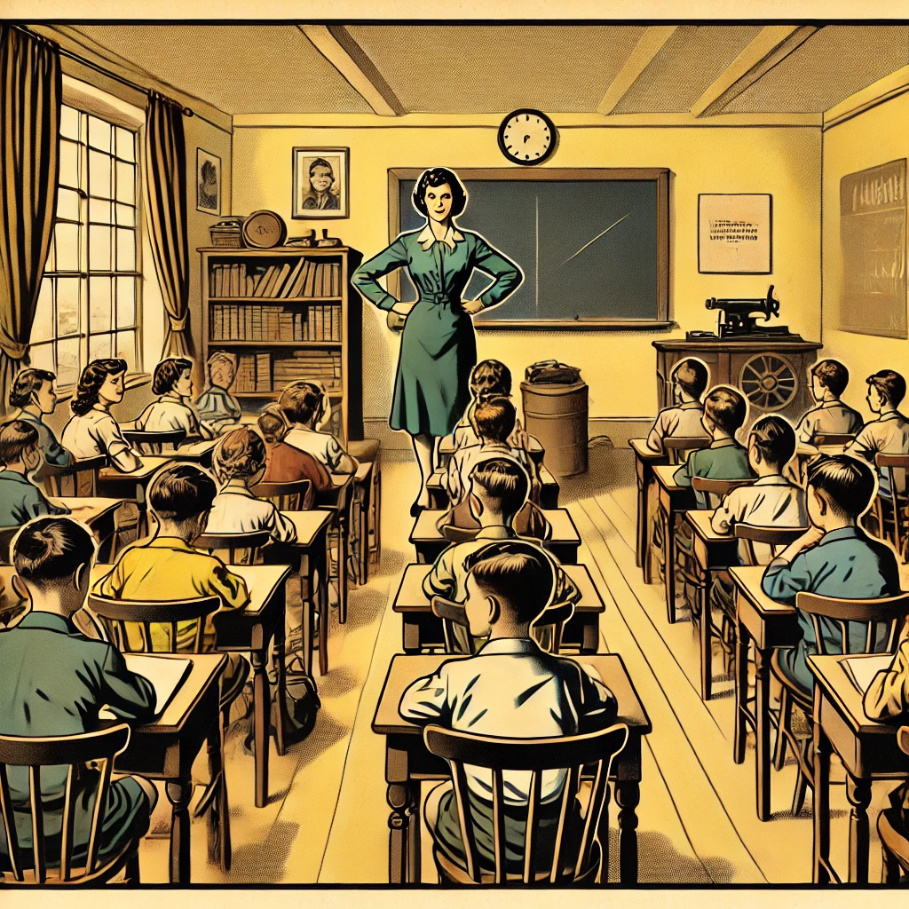
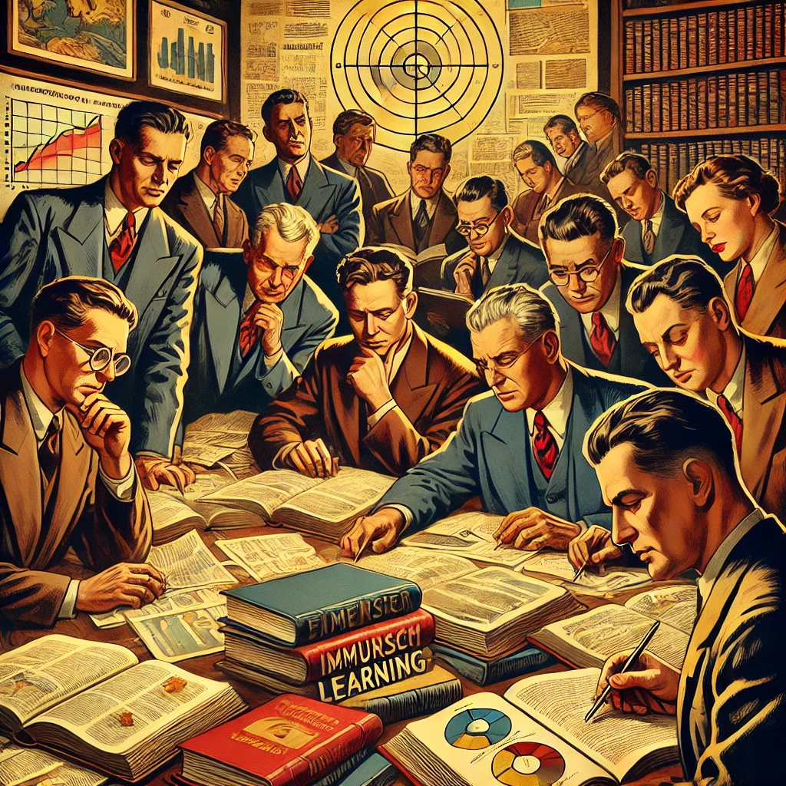

The Problem: Traditional Classroom Methods
- ✘ Rigid and disengaging.
- ✘ Focus on rules over communication.
- ✘ Fails to inspire long-term retention.


The Solution: Immersion Learning
ALL THE EXPERTS AGREE!
- Venditti (2021): Enhanced engagement with TPRS.
- Seibert Hanson & Brown (2019): 30% retention improvement with Anki.
- Ali et al. (2019): Communicative methods boost motivation and proficiency.
- Kawaguchi (2021): Practical applications of digital tools.
- Zhang (2023): Benefits of native language transfer.
- Hwang et al. (2024): Sustained proficiency with MALL.